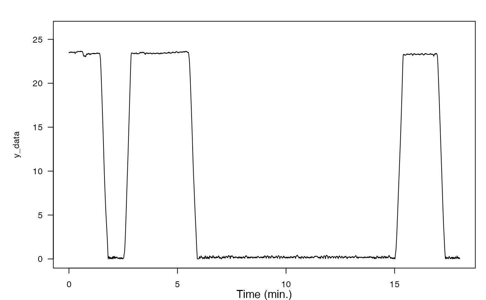
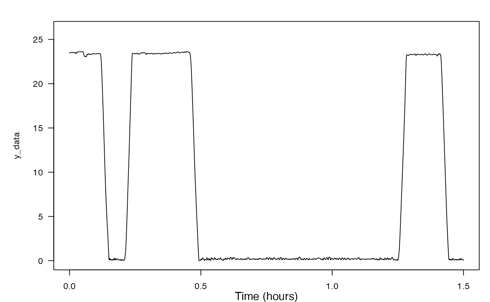

Interpolate regularly sampled data to increase its sampling rate and match its length to another variable.
Source:R/interp2length.R
interp2length.RdThis function is used to reduce the time span of data by cropping out any data that falls before and after two time cues.
Arguments
- X
A sensor list, vector, or matrix. If x is or contains matrix, each column is treated as an independent signal.
- Z
is a sensor structure, vector or matrix whose sampling rate and length is to be matched.
- fs_in
is the sampling rate in Hz of the data in X. This is only needed if X is not a sensor structure.
- fs_out
is the required new sampling rate in Hz. This is only needed if Z is not given.
- n_out
is an optional length for the output data. If n_out is not given, the output data length will be the input data length * fs_out/fs_in.
Value
Y is a sensor structure, vector or matrix of interpolated data with the same number of columns as X.
Examples
plott_base(X = list(harbor_seal$P), fsx = 5)

P_dec <- decdc(harbor_seal$P, 5)
P_interp <- interp2length(X = P_dec, Z = harbor_seal$A)
plott_base(X = list(P_interp$data), fsx = 1)
